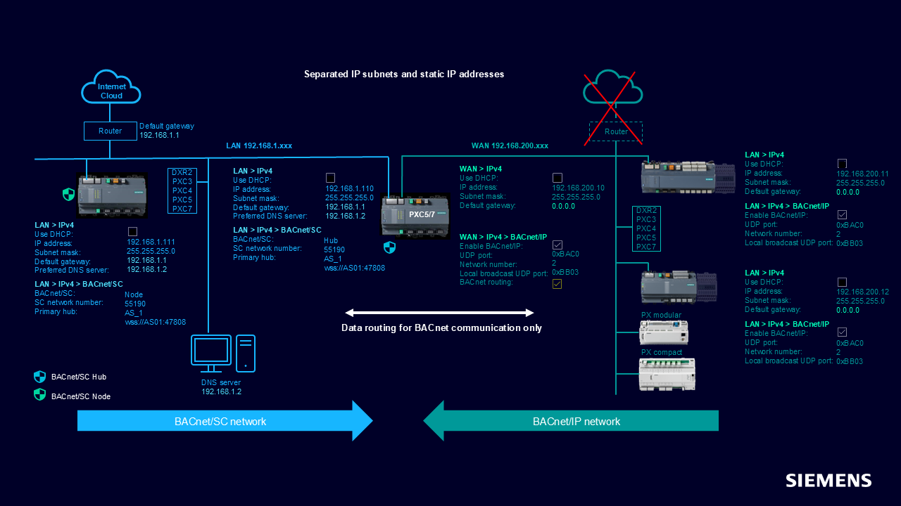
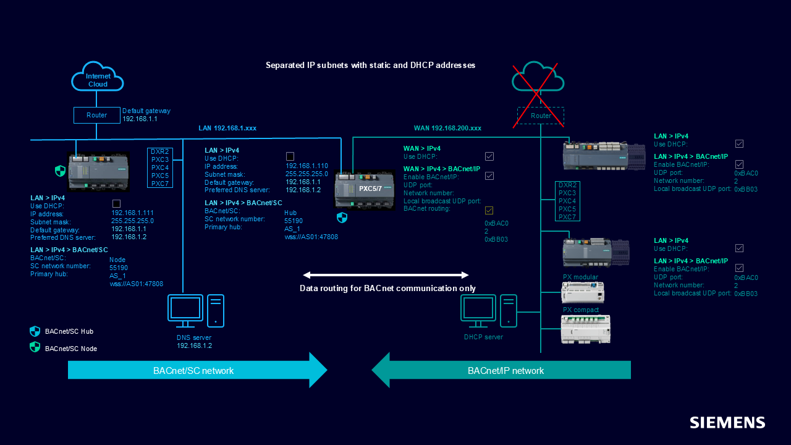
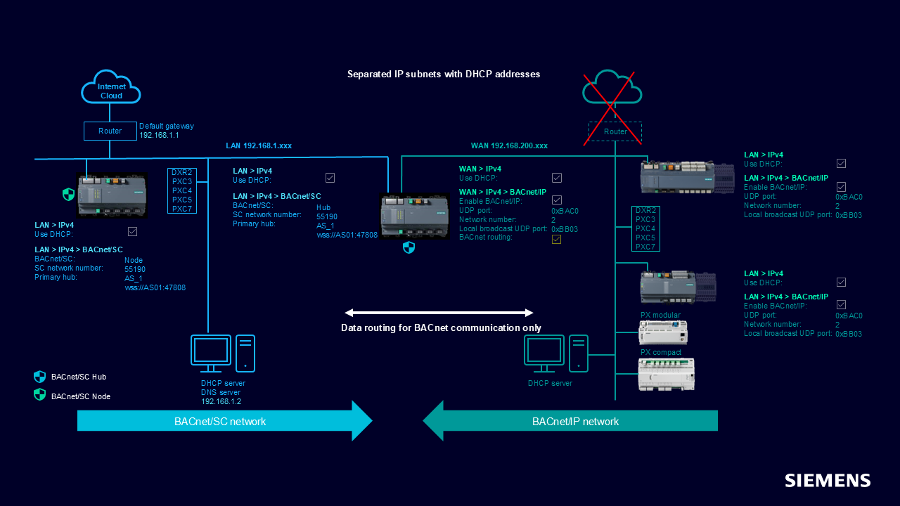

Topologies with BACnet/IP and BACnet/SC
Topic | Description |
|---|---|
BACnet/SC device used as hub or node |
Note: When configured as a node, the latency time for LAN <-> WAN communication increases by a few msec. |
BACnet routing LAN/WAN device | With BACnet/SC, BACnet routing is automatically enabled on the LAN port. There is no checkbox in ABT Site to activate it. BACnet routing must be manually activated on the WAN port. |
Static IP address on LAN subnet and WAN subnet

Static IP address on LAN subnet and DHCP address on WAN subnet

DHCP address on LAN subnet and on WAN subnet
